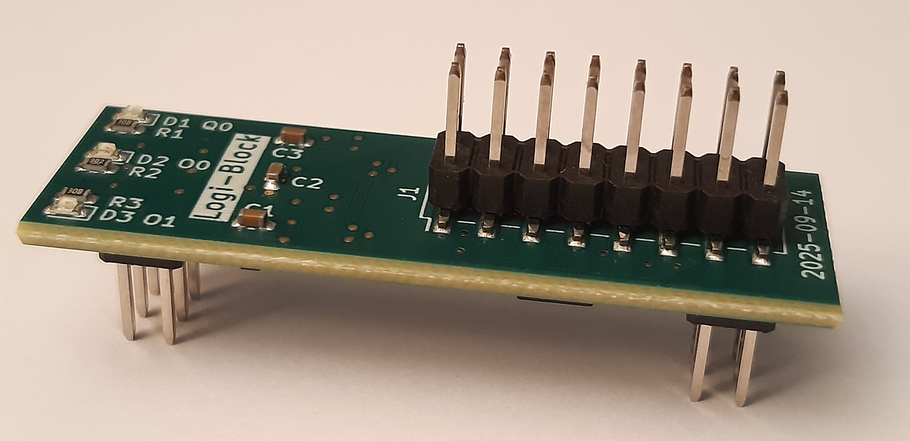
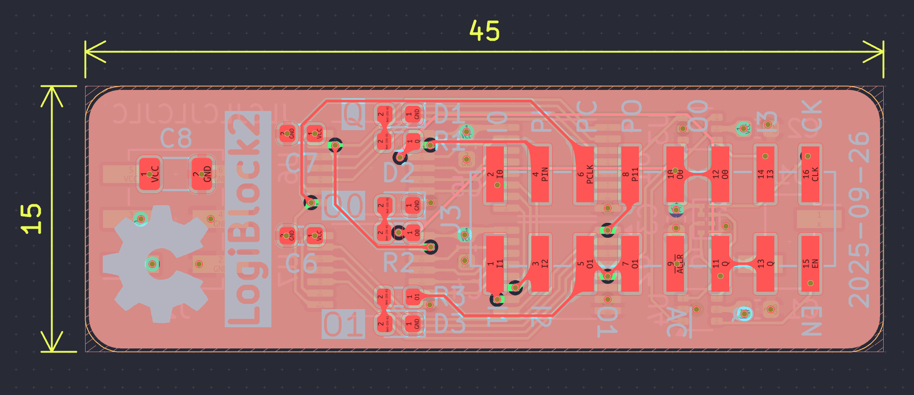

Logi-Block
With this project i wanted to delve in the world of electronics in a more "serious" way. I always played around with breadboards and designed a couple of PCBs with KiCad, but i have never actually manufactured anything up until this point. I designed Logi-Block simply to have something to fabricate, just to see how the experience of the whole process is.
What is Logi-Block?
Logi-Block is a single simplified FPGA logic cell implemented with 74xx discrete logic ICs. The board is capable of computing any 4-to-1 or 3-to-2 boolean function as its LUT is "fracturable". It also has an optional D-type output flip-flop to store the result. With this board is in theory possible, although very impractical, to implement any digital logic circuit in the same way that an FPGA would.
The reason why i decided to implement something like this, is because i wanted to apply the things i learned about high-speed PCB design. The board itself is quite small, at around 1,5cm x 4,5cm with a 6-layer design (probably overkill). Laying out and routing everything was quite the challenge because of the space and fabrication constraints, resulting is a few total "redos" of the board, but it was quite an interesting endeavour.
Fabrication
I chose JLCPCB which is a low-cost chinese based PCB manufacturer. They have lots of services, ranging from PCB fabrication, PCB assembly (SMT and THT), 3D printing and even CNC machining. Since i wanted to fabricate a fully functional PCB, i chose the first two options. The experience was a bit overwhelming at first since i had to be sure that the my PCB design was within their capabilities and tolerances, which are thankfully listed on their website. Moreover, since i also wanted the assembly service, i had to integrate the components that were available through them. I also had to generate the production files needed for fabrication according to their needs and formats, which i managed to do with a KiCAD plugin (i wish i knew about it earlier in the project...).
The total cost for everything, that is, PCB fabrication, assembly and shipping to my door amounted around 170€ for 5 boards (including VAT). Obviously, the more boards, the lower the cost per board as everything gets amortized leaving the actual components as the dominant cost.

When i received the package i was quite impressed by the quality of the board. The silkscreen was very crisp and the component assembly was basically flawless. The only negative aspect was that the board edges weren't as smooth as on other boards i have handled (for example an Arduino UNO i had lying around) and a few small strands of fiberglass were detaching, though nothing to be concerned about.
Version 2
I eventually decided to design a second version as the first one had some design issues... Simply put, i made a mistake connecting the asynchronous-set of the output flip-flop, leaving it permanently stuck at high logic level (doh!). Another mistake i made in the first version was the spacing of the bottom connectors that allowed the PCB to be mounted on a breadboard was slightly wrong. With those two issues solved and some general improvements, the V2 is ready to be manufactured, though i still haven't placed the order.
Thankfully, the version 1 didn't explode or melt when i connected it to 5V to test it out. It turns out that it was almost fully functional, with the exception of that flip-flop. I honestly didn't think it would work at all on the first try...

You can view the source code (KiCAD project) at this Git repo, which also contains the production files for the V2 in the releases section.